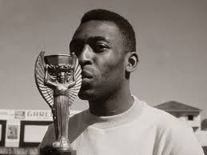
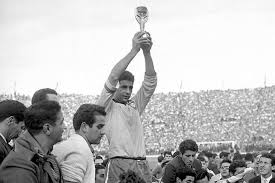
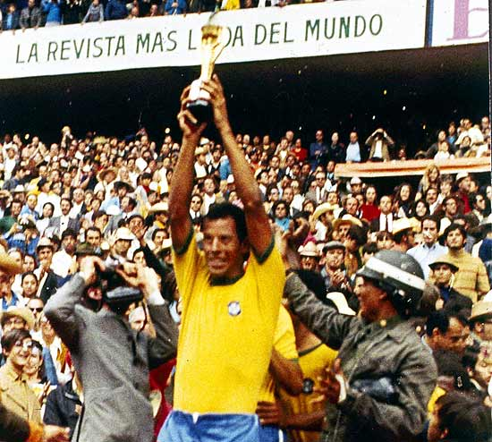
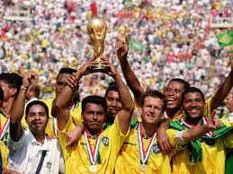
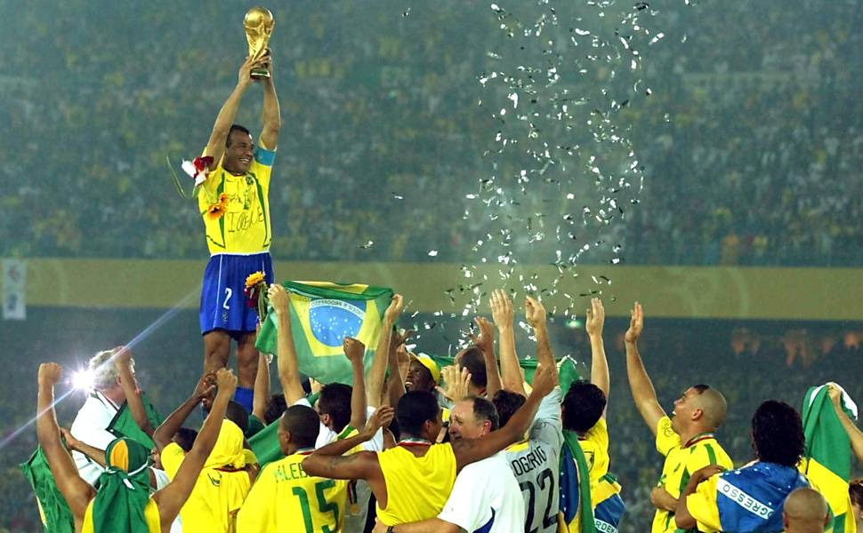

O Brasil chegou desacreditado após o trauma de 1950, mas apresentou um futebol revolucionário. Garrincha encantou o mundo com seus dribles, enquanto Pelé, ainda adolescente, se tornou protagonista.
Na final, vitória por 5x2 contra a Suécia, com dois gols de Pelé. Foi o primeiro título mundial do Brasil, marcando o início da maior seleção da história.

Pelé se lesionou no início do torneio, e toda a responsabilidade caiu sobre Garrincha. Ele respondeu com atuações históricas, sendo decisivo em gols e jogadas.
O Brasil venceu a Tchecoslováquia por 3x1 na final e conquistou o bicampeonato, mostrando a força coletiva da equipe.

Considerada a melhor seleção de todos os tempos, o Brasil apresentou um futebol ofensivo e coletivo impressionante. Jairzinho marcou em todos os jogos.
Na final contra a Itália, vitória por 4x1. O último gol, de Carlos Alberto, é considerado um dos mais bonitos da história das Copas.

Depois de 24 anos sem títulos, o Brasil voltou a conquistar a Copa com um estilo mais defensivo. Romário foi o grande destaque e líder técnico.
A final terminou 0x0 contra a Itália e foi decidida nos pênaltis. O erro de Roberto Baggio garantiu o tetracampeonato.

O Brasil chegou desacreditado, mas contou com o trio Ronaldo, Rivaldo e Ronaldinho. Ronaldo, após graves lesões, deu a volta por cima.
Na final, vitória por 2x0 contra a Alemanha com dois gols de Ronaldo, garantindo o pentacampeonato mundial.